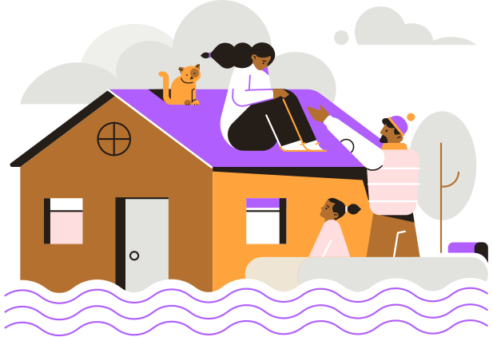
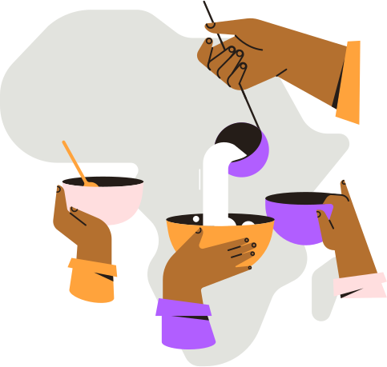
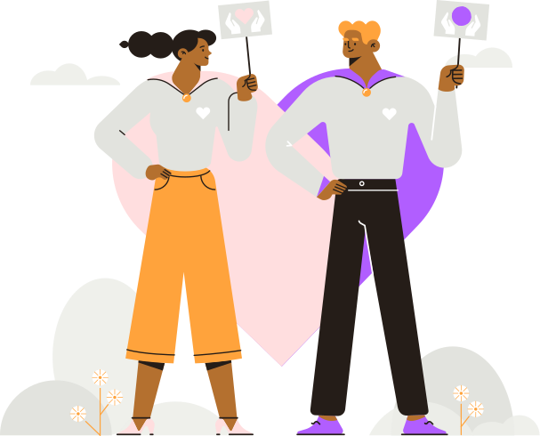
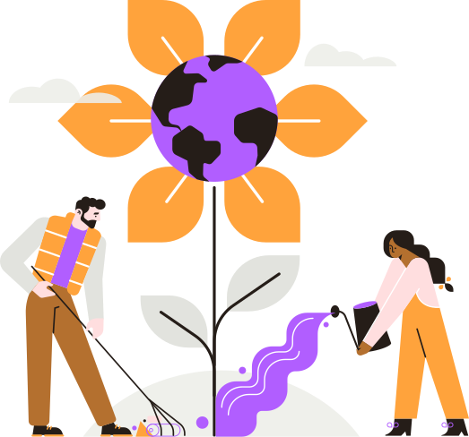

Sobre ASEAF
ASOCIACIÓN ESTATAL DE ACOGIMIENTO FAMILIAR
Queremos conseguir que el derecho de todos los niños, niñas y adolescentes a crecer en familia sea una realidad.
Desde ASEAF agrupamos a las principales asociaciones de familias acogedoras existentes en las distintas Comunidades Autónomas y Provincias. Trabajamos juntos con el objetivo de que el acogimiento se constituya como la medida preferente de protección a la infancia frente a la institucionalización.
Quiénes forman ASEAF
ASEAF es la Asociación Estatal de Acogimiento Familiar y está integrada por 23 asociaciones de distintas Comunidades Autónomas formadas, en su mayoría, por familias acogedoras a las que además prestan apoyo de forma directa. Todos juntos sumamos para crear cultura del acogimiento a nivel nacional.
Qué realizan
Apoyo a las familias acogedoras
Impulsamos programas específicos en colaboración con las asociaciones autonómicas.
Coordinación entre las diferentes asociaciones autonómicas
Creamos espacios de encuentro e intercambio de buenas prácticas entre las asociaciones de familias.
Interlocución con las Administraciones Públicas
Colaboramos con los grupos políticos e instituciones para impulsar políticas y legislación relacionadas con el acogimiento familiar.
Difusión, sensibilización y concienciación social
Llevamos a cabo eventos para promover el acogimiento familiar y desarrollamos actividades de formación e investigación.
Fuente:
ASEAF